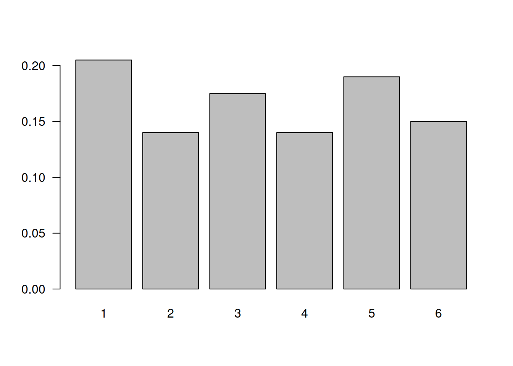
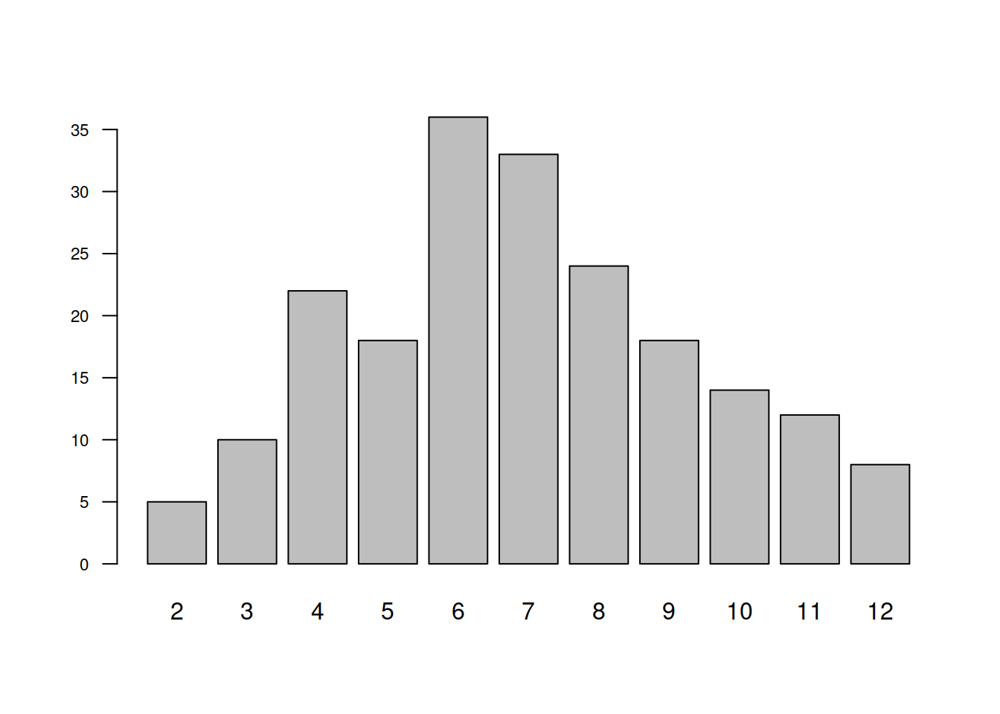
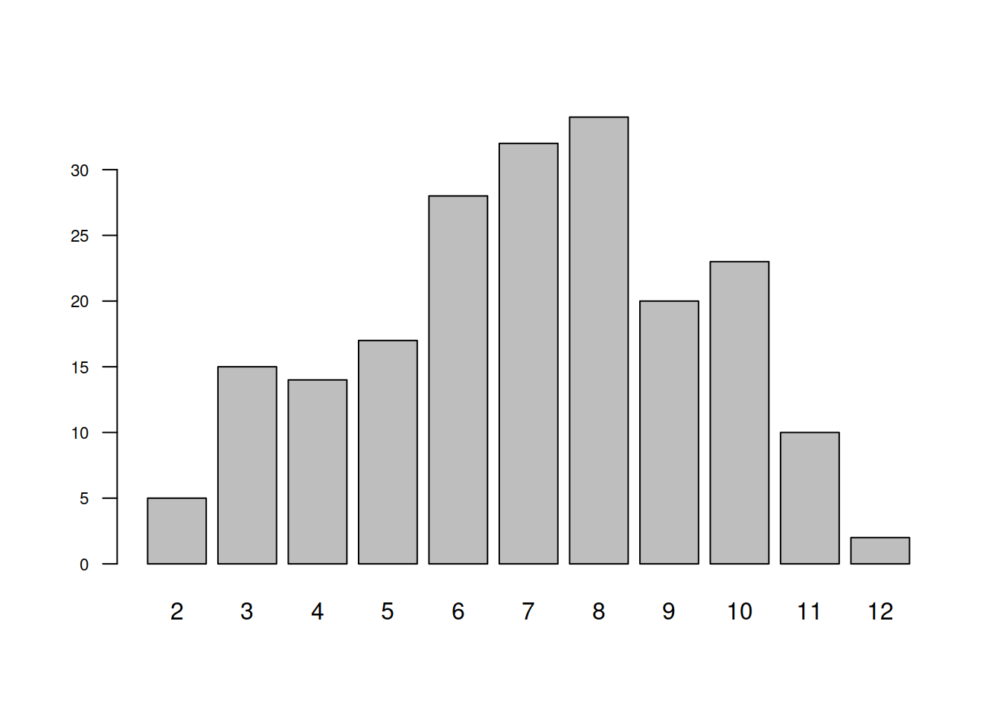

Código 2.1
Módulo 2- Unidad 2.1
dgonzalez

Experimentos aleatorios
Como se menciona en la Guía 2.1, un Experimento aleatorio se puede definir como una acción que podemos repetir en iguales condiciones muchas veces y cuyo resultado no conocemos anticipadamente

Un ejemplo de ello es cuando estamos jugando parques y un jugador lanza dos dados, el resultado solo es posible de observar después de haber realizado la acción de lanzarlos.
Al conjunto de todos los posibles valores que puede tomar el experimento aleatorio se le denomina Espacio muestral, que se denota por la letra mayuscula S.

Para este ejemplo :
\[S=\{ 2,3,4,5,6,7,8,9,10,11,12
\}\]
Lanzamiento de un dados
Para simular el lanzamiento de un dado utilizaremos la función
sample(x, size, replace = FALSE, prob = NULL), con
parámetros: x : valores del espacio muestral;
size : tamaño de la muestra y replace : para
determinar si la selección se realiza con remplazo o sin remplazo.
sample(1:6,200, replace = TRUE), da un resultado una
muestra de 200 valores enteros entre 1 y 6, con repetición.
n=200
x=sample(1:6,n, replace = TRUE)
td1=prop.table(table(x))
barplot(td1, las=1)
Lanzamiento de dos dados
En este caso utilizamos la función sample() dos veces y
se obtienen dos vectores que representan los resultados del dado1 y del
dado2 respectivamente. Con estos resultados se construye una
data.frame() de dos columnas por n filas. En ella cada fila
de dos componentes conforma una muestra con dos valores.
Para obtener la suma de los valores de los dos dados, utilizamos la
función apply(X, MARGIN, FUN, ..., simplify = TRUE)
indicando con MARGIN=1 que la operación (siguiente
parámetro) se realizará por filas. Por último en el parámetro
FUN se asigna la función a realizar. En resumen :
suma=apply(dados, 1, sum)
n=200
d1=sample(1:6,n, replace = TRUE)
d2=sample(1:6,n, replace = TRUE)
dados=data.frame(d1,d2)
suma=apply(dados, 1, sum)
barplot(table(suma), las=1,cex.axis=0.7)
data.frame(prop.table(table(suma))) suma Freq
1 2 0.025
2 3 0.050
3 4 0.110
4 5 0.090
5 6 0.180
6 7 0.165
7 8 0.120
8 9 0.090
9 10 0.070
10 11 0.060
11 12 0.040Procedimiento alternativo
t=sapply(1:200, function(x){sum(sample(1:6,2,rep=T))})
barplot(table(t), las=1, cex.axis=0.7)
Urna
Para simular la extracción de bolas de una urna, se utilizan las
funciones sample() y rep() mostradas en el
siguiente ejemplo :
- Simulación de urna con: 3 bolas Blancas, 5 Rojas y 4 Azules
- 1 representa las bolas blancas
- 2 representa las bolas rojas
- 3 representa las bolas azules
sample(c(1,2,3),2,rep=T,prob=c(3,5,4))[1] 2 1La misma simulación con palabras
sample(c("Blanca","Roja","Azul"),2,rep=T,prob=c(3,5,4))[1] "Roja" "Azul"Tablas de contingencia
Las tablas de contingencia o tablas cruzadas se basan en las tablas de frecuencia para dos variables cualitativas o cuantitativas con pocos valores. En ellas se representan probabilidades conjuntas, marginales y condicionales
Inicialmente construimos una tabla con los valores de las frecuencias relativas conjuntas
x=c(20,60,100,30,140,50)
m=matrix(x,ncol=2)
rownames(m)=c("Adminitrativo","Operativo","Vendedor")
colnames(m)=c("Mujer","Hombre")
m Mujer Hombre
Adminitrativo 20 30
Operativo 60 140
Vendedor 100 50En este caso se adicionan las frecuencias relativas marginales
addmargins(m) Mujer Hombre Sum
Adminitrativo 20 30 50
Operativo 60 140 200
Vendedor 100 50 150
Sum 180 220 400Para convertirlas en probabilidades utilizamos la función
prop.table()
prop.table(m) Mujer Hombre
Adminitrativo 0.05 0.075
Operativo 0.15 0.350
Vendedor 0.25 0.125Esta función también se utiliza para calcular las probabilidades condicionales por filas
prop.table(m,1) Mujer Hombre
Adminitrativo 0.4000000 0.6000000
Operativo 0.3000000 0.7000000
Vendedor 0.6666667 0.3333333o las probabilidades condicionales por columnas
prop.table(m,2) Mujer Hombre
Adminitrativo 0.1111111 0.1363636
Operativo 0.3333333 0.6363636
Vendedor 0.5555556 0.2272727
Supongamos que tenemos una enfermedad rara que afecta al 1% de la población. También sabemos que una prueba médica tiene una precisión del 95% para detectar la enfermedad cuando está presente, pero también puede dar falsos positivos en un 3% de los casos en los que la enfermedad no está presente. Se desea calcular la probabilidad de que una persona tenga la enfermedad dado que la prueba dio positivo.
Primero, establezcamos algunas notaciones:
A: La persona tiene la enfermedad. B: La prueba da positivo.
Queremos calcular \(P(A|B)\), es decir, la probabilidad de que la persona tenga la enfermedad dado que la prueba dio positivo.
Para dar solución al problemas empleamos el Teorema de Bayes
\[P(A|B) = \dfrac{P(B|A) . P(A)}{P(B)}\]
Donde
- \(P(A|B)\) :probabilidad de que la prueba dé positivo dado que la persona tiene la enfermedad (precisión de la prueba).
- \(P(A)\) : probabilidad de que una persona tenga la enfermedad (1% en este caso).
- \(P(B)\) : probabilidad de que la prueba dé positivo.
Para calcular \(P(B)\) usamos la regla de probabilidad total:
\[P(B) = P(B|A) . P(A) + P(B|A'). P(A')\]
# Probabilidades dadas
Prob_A <- 0.01 # Probabilidad de tener la enfermedad
Prob_B_dado_A <- 0.95 # Precisión de la prueba (dar positivo dado que tiene la enfermedad)
Prob_B_dado_noA <- 0.03 # Falsos positivos (dar positivo dado que no tiene la enfermedad)
# Calculamos P(not A)
Prob_noA <- 1 - Prob_A
# Calculamos P(B)
Prob_B <- Prob_B_dado_A * Prob_A + Prob_B_dado_noA * Prob_noA
# Calculamos P(A|B) usando el Teorema de Bayes
Prob_A_dado_B <- (Prob_B_dado_A * Prob_A) / Prob_B
# Imprimimos el resultado
cat("Probabilidad de tener la enfermedad dado que la prueba dio positivo:", Prob_A_dado_B, "\n")Probabilidad de tener la enfermedad dado que la prueba dio positivo: 0.2423469 Tabla cruzada
# Cargar librería
library(kableExtra)
Attaching package: 'kableExtra'The following objects are masked from 'package:flextable':
as_image, footnoteThe following object is masked from 'package:dplyr':
group_rows# Crear la tabla cruzada
tabla_cruzada <- matrix(c(0.95 * 0.01, 0.03 * 0.99, 0.05 * 0.01, 0.97 * 0.99), nrow = 2, byrow = TRUE)
colnames(tabla_cruzada) <- c("Enfermedad", "No Enfermedad")
rownames(tabla_cruzada) <- c("Prueba Positiva", "Prueba Negativa")
# Imprimir la tabla cruzada con estilo
tabla_estilizada <- kable(tabla_cruzada) %>%
kable_styling(bootstrap_options = "striped", full_width = FALSE)
tabla_estilizada| Enfermedad | No Enfermedad | |
|---|---|---|
| Prueba Positiva | 0.0095 | 0.0297 |
| Prueba Negativa | 0.0005 | 0.9603 |

Convergencia de Probabilidad al Lanzar Dos Dados
En el siguiente problema, exploraremos cómo la probabilidad de obtener una suma de 7 al lanzar dos dados converge a su valor teórico a medida que aumentamos el número de lanzamientos. Se sabe que cuando se lanzan dos dados equilibrados, la suma más probable es 7.
- Teoría: Si lanzamos dos dados equilibrados, la suma más probable es 7, ya que hay más combinaciones posibles para obtener \(7\) (\(1+6\), \(2+5\), \(3+4\), \(4+3\), \(5+2\), \(6+1\)) que para cualquier otra suma. La probabilidad teórica de obtener una suma de \(7\) es:
\[\dfrac{6}{36} = \frac{1}{6} \approx 0.1667\]
Simulación: Utilizaremos R para simular lanzamientos de dos dados y calcular la probabilidad de obtener una suma de \(7\). Luego, graficaremos cómo esta probabilidad converge a su valor teórico a medida que aumentamos el número de lanzamientos.
Reto: Ejecutar la simulación con diferentes tamaños de muestra y observar cómo la probabilidad de obtener una suma de \(7\) cambia. Luego, crea un gráfico que muestre esta convergencia. ¿En qué punto la probabilidad simulada se acerca al valor teórico?
- Instrucciones:
- Utiliza el código de simulación proporcionado y ajusta los tamaños de muestra según las indicaciones.
- Ejecuta la simulación para diferentes tamaños de muestra y registra los resultados.
- Crea un gráfico que muestre cómo la probabilidad simulada cambia con el tamaño de muestra.
- Analiza el gráfico y compara la probabilidad simulada con el valor teórico.
- Escribe una breve conclusión sobre cómo la probabilidad converge a medida que aumenta el tamaño de muestra.
Código R
# Función para simular lanzamientos de dos dados y calcular la probabilidad de suma 7
simulate_probability <- function(n_lanzamientos) {
dados_1 <- sample(1:6, n_lanzamientos, replace = TRUE)
dados_2 <- sample(1:6, n_lanzamientos, replace = TRUE)
suma_dados <- dados_1 + dados_2
prob_suma_7 <- sum(suma_dados == 7) / n_lanzamientos
return(prob_suma_7)
}
# Tamaños de muestra a considerar
tamanos_muestra <- seq(100, 100000, by = 100)
# Vector para almacenar probabilidades
probabilidades <- numeric(length(tamanos_muestra))
# Simulación y cálculo de probabilidades para diferentes tamaños de muestra
for (i in 1:length(tamanos_muestra)) {
probabilidades[i] <- simulate_probability(tamanos_muestra[i])
}
# Gráfico de convergencia
plot(tamanos_muestra, probabilidades, type = "l",
xlab = "Tamaño de Muestra", ylab = "Probabilidad de Suma 7",
main = "Convergencia de Probabilidad de Suma 7 al Lanzar Dos Dados")
abline(h=6/36, col="red")